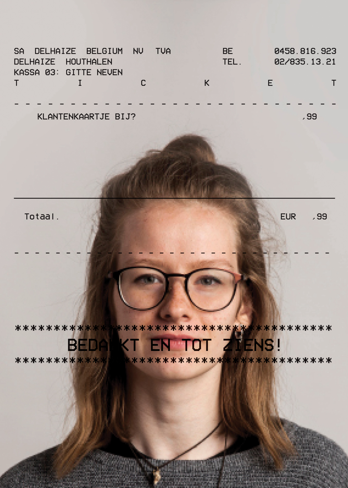
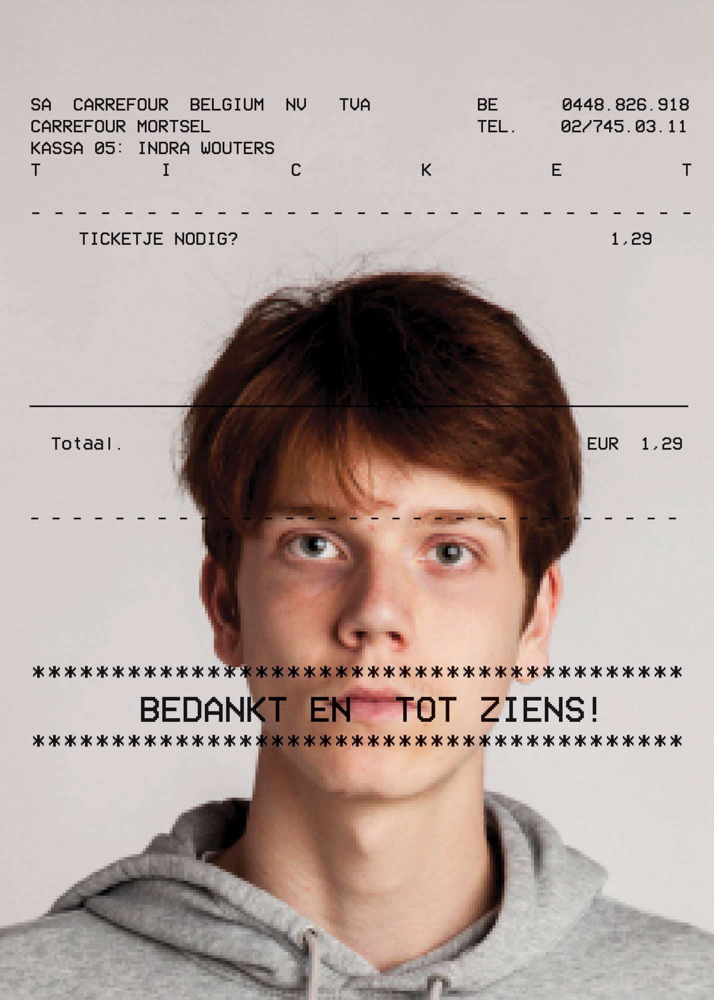
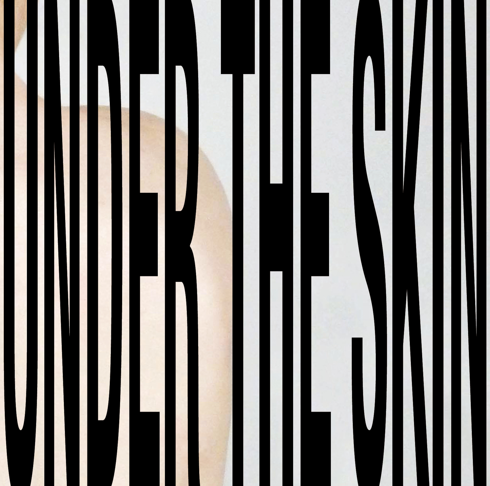

Samen met een collega uitzoeken wat ons gelijk maakt en daaruit een aantrekkelijk design maken. Ons gemeenschappelijk punt was dat we beide een studentenjob hadden in een supermarkt. We hadden hierbij het idee om onze poster te doen lijken op een kassaticket. (2017) 2x 500x700


ABECEDARIUM
Een boek maken zoals het principe van een abecedarium rond een thema. Een abecedarium wordt vaak gegeven aan kinderen, ze leren hieruit letters associeren met woorden. Bijvoorbeeld: A is voor aap, B is voor banaan, ... Het thema rond mijn abecedarium is 'vieze dingen' dus beelden waarvan we een rilling in ons lichaam krijgen. De woorden die ik vond moest ik dan uitbeelden aan de hand van associaties. (2017-2018) 28 paginas 200x280
Uit een lijst met talrijke citaten van bekende mensen koos ik de citaat van Gertrude Stein 'Regularly Gay'. De opdracht was van dit citaat een aantrekkelijke poster te maken en te experimenteren met de typografie. Ik koos dit citaat omdat het op het eerste zicht er heel moelijk uit zag. Maar deze uitdaging is wat me zo aanzetten om de poster te maken. Ik wilde het gemakkelijker maken het te begrijpen. En dit moeilijk uitziende citaat leuker uit te beelden, net als Gertrude Stein het plezier vond in het zeggen van deze citaten. (2018)
840x1220
LP UNDER THE SKIN
De opdracht was een LP maken rond de soundtrack van een film. Er was een lijst van al de films waaruit we konden kiezen. De film Under the skin van Jonathan Glazer sprak me enorm aan, niet alleen door de beelden maar ook door de bijpassende muziek van Mica Levi. (2018) Platenhoes: 315x3x312

MYSTERIE KRANT
Om een theorie rond een mysterie te verantwoorden wordt er een krant gecreëerd. Bij deze krant werdt er gefocust op de Bermuda driehoek. De theorie achter dit complot is dat de Bermuda driehoek een portaal is naar een mooiere dimensie, ene vol lusten en dromen. Dit probeerde ik weer te geven aan de hand van een duidelijk verschil tussen het midden van de krant en het einde. De poster is het werk van Gustav Courbet 'L'origine du monde' waarmee het duidelijk wordt gemaakt dat de portaal een vagina is. (2018) 8 paginas,
390x540 closed, 780x540 open
De huisstijl van onze eigen piratenzender ontwikkelen, oftewel een 'hamradio' creëeren. (RADIO) speelt enkel white noise, witte ruis, deze muziek kan mensen zowel tot rust brengen als frustreren. Via mijn huisstijl wou ik dit dan weergeven aan de hand van voorwerpen een storing te geven. Een strak, afgelijnd voorwerp wordt een absurd beeld dat nog nauwelijks herkenbaar wordt. (2018) Playlist 841x594 + 3 QSL kaarten 140x90 + vlag 100x70